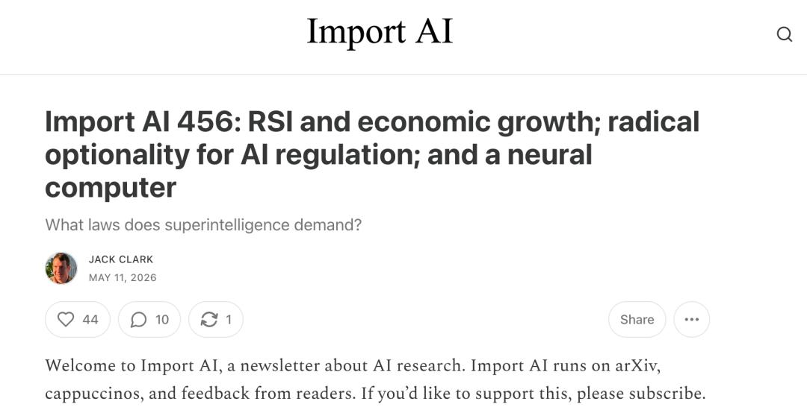

下一代计算机：没有CPU，没有操作系统，只有一个AI
未来的计算机可能根本不是我们今天理解的样子

在2026年的今天，人工智能的演进正踩在一个微妙的节点上：一边是递归自我改进可能引爆的经济大爆发，另一边是“神经计算机”概念对传统软件底层的彻底颠覆。本期《Import AI》由Anthropic联合创始人Jack Clark执笔，串联起了几条看似独立、实则相互咬合的前沿线索——政策层面，政府开始意识到，真正有效的 AI 治理未必是立刻写出一套僵硬规则，而是先建立未来随时能接管局面的能力；技术层面，研究者开始尝试让神经网络不再只是“运行在计算机上”，而是直接成为“计算机本身”；经济层面，越来越多模型指向一个激进结论——只要 AI 自动化跨过某些阈值，增长曲线就可能从线性、指数，跃迁到近乎失控的超指数；基础设施层面，像 Google 这样的公司正在把分散在不同地区、不同代际的算力，改造成一个更具韧性的全球训练机器。这些事情单独看都足够重要，合在一起看，才会显出一种真正的时代压力：AI 不只是一个产品周期，它正在逼近制度、经济与技术底座的交汇点。
以下是JACK CLARK 这篇文章的编译。
1
AI的监管
“管，还是不管？”关于AI监管的争论一直非黑即白。但一个来自Institute for Law & AI的研究团队提出了一条中间路线：激进可选性（Radical Optionality）。核心思想很简单，政府现在就应该投资建设未来可能需要的监管工具，即使这些工具今天用不上。
“激进可选性”这套思路最有价值的地方，在于它跳出了 AI 监管讨论里最常见的二元对立：要么担心失控，主张尽快重手监管；要么担心扼杀创新，因此尽量放任发展。LawAI 的作者们提出，真正成熟的做法，是先保留政府未来做正确决策的能力。换句话说，今天最应该做的，不一定是过早定死一套规则，而是尽快建设那些在未来任何场景下都可能派上用场的制度能力，包括信息获取权、跨部门共享机制、专业评估体系、对前沿实验室员工的吹哨人保护，以及围绕模型权重与算法机密的安全标准。它不是“先别管”，而是“先把能看见、能判断、能响应的能力建起来”。
这套框架之所以值得重视，是因为它承认一个经常被忽略的现实：面对变革型 AI，最大的不确定性不是“有没有风险”，而是“风险会以什么形态到来”。如果未来几年 AI 带来的问题并不是单点事故，而是研发速度、劳动力替代、战略竞争和供应链安全等多重变量同时变化，那么今天写死在法规里的定义、阈值和责任结构，可能很快就会过时。因此，论文强调“灵活规则与定义”，甚至倾向于让政府部门保留更快更新规则的能力，同时通过第三方审计、报告义务与能力评测，让公共部门不至于在关键时刻完全依赖企业自报。它的内在逻辑非常像给国家治理系统购买一份高额保险：未必马上触发理赔，但一旦局势急转，晚一天建都可能太迟。
当然，这套主张并非没有代价。Jack Clark 在转述时也提醒，任何“为未来危机预置权力”的设计，都存在被更强势政府重新解释、甚至扩权使用的风险。所谓“这些工具本身并不重”，并不意味着它们不会在政治环境变化后被用成更重的东西。因此，“激进可选性”真正难的部分，不只是提升治理能力，更是如何在提升能力的同时守住民主正当性、程序约束与滥权防线。从这个意义上说，它并不是一篇单纯主张加强监管的文章，而是一篇关于“国家如何在不确定时代保留行动能力，同时不被自己的能力反噬”的治理设计稿。
2
神经计算机，超级AI
如果说上述讨论还停留在“如何治理现有AI”的层面，那么Meta和KAIST研究者发表的这篇《神经计算机》（Neural Computers）论文则指向一个更根本的问题：未来的计算机可能根本不是我们今天理解的样子。
论文提出了一个大胆的设想——用一个巨大的神经网络来完全取代传统计算机的架构，将计算、内存、输入输出全部统一到一个"学出来的运行时状态"中。换句话说，未来的电脑不需要Windows、macOS或任何操作系统，它本身就是一个能直接理解并执行你所有指令的神经网络。
这篇论文之所以值得关注，除了想法本身足够颠覆，还与它的作者有关。论文作者之一Juergen Schmidhuber是AI领域的传奇人物，早在几十年前就提出了生成模型、世界模型、生成对抗网络等如今成为行业基石的概念。而"神经计算机"这个想法，用Jack Clark的形容，"太过离谱又太过简单，以至于它可能是对的"，虽然这需要比今天大得多的算力和数据。
用一个更直观的比喻来理解这个设想：你现在用电脑，是通过鼠标键盘下指令，然后操作系统去调动硬件执行。而神经计算机的设想，是把这整个流程压缩进一个黑盒子——你不用管里面有没有Windows、有没有CPU和内存，你只需要对它说"帮我写个文档"或"帮我算个数"，它就直接给你结果。这个黑盒子内部没有任何传统意义上的操作系统，它靠自己的"大脑"——一个被训练出来的巨大神经网络——来完成所有计算。
研究团队目前已经完成了初步验证。他们用一个强大的视频生成模型和精心筛选的训练数据，创建了命令行界面和图形用户界面两个版本的神经计算机原型。在原论文的描述中，命令行版本"学会了渲染和执行基本的命令行工作流，通常能保持与终端缓冲区的对齐，并捕捉日常命令行使用的常见特征（如快速回滚、提示词换行、窗口大小调整），尽管符号稳定性仍然有限。"而图形界面版本则展示了更接近日常操作的能力。
当然，这只是万里长征第一步。Jack Clark的评价是，目前的原型就像"莱特兄弟起飞前的试飞"，只是刚刚开始预示着一条更远的路。但从它身上，可以看到一个很有意思的方向：未来可能所有的软件都不再以传统形式存在，而直接活在神经网络的权重里。正如论文所描述的："神经计算机指向一种新的机器形态——一个单一的、学出来的运行时状态充当计算机本身，同时驱动像素、文本和动作，囊括今天操作系统和界面所处理的一切。这种系统将极其有用，与今天的系统完全不同，而它的存在本身，也可能大大增加我们自身正生活在一个模拟中的可能性。"
3
递归自我改进可能引爆经济爆发式增长
如果说神经计算机是硬件基础设施的潜在革命，那来自经济学家的这份研究则试图用数据回答另一个核心问题：当AI能自己改进自己，整个世界会发生什么？
来自Forethought、哥伦比亚大学和弗吉尼亚大学的研究者构建了一个经济学模型，探讨AI的递归自我改进——即AI系统能够自动化其自身的后续开发——将如何影响宏观经济。他们的结论可以用一个简单的数字来概括：13%。
按照模型计算，只需要全行业13%的自动化率，就足以把整个经济推进爆发式增长区间；如果把范围限定在软件和硬件研究上，17%就够了。更具体地说，硬件研发是绝对的关键杠杆——因为硬件研究的回报大约是软件的五倍，是全要素生产率（TFP）的十倍。这意味着芯片设计领域的每一项自动化突破，都能带来远超其他领域的放大效应。单靠硬件领域20%的自动化，就足以跨越爆发增长的门槛。
这个过程中，两个正反馈循环会互相强化。第一个是技术反馈循环：自动化AI研究本身能产出更好的AI，更好的AI又能更高效率地自动化更多研究。第二个是经济反馈循环：更高的产出带来更多可用资源，更多资源又被重新投入到驱动经济增长的领域中。两个循环一旦同时触发，就会形成难以逆转的加速效应。
在这个模型的基准模拟中，一个"自动化冲击"——比如软件研发完全自动化，其他经济部门仅5%自动化——将使"经济奇点"在大约六年后到来。研究者写道："经验上，近期软件和硬件领域生产率的增速已经异常之快，因此向新的均衡增长路径或加速增长的过渡，也可能极为迅速。"
研究人员认为，一个实用的启示是：跟踪AI研发活动中的自动化水平，可能和监测传统宏观经济指标同样重要。关键研究领域的自动化程度，可以作为增长加速的早期预警信号，而这正是AI公司内部的经济学家可以测算并公开分享的数据。研究还特别提到，考虑到本论文的合著者之一Anton Korinek如今在Jack Clark所在的Anthropic工作，而他的论文和Clark关于递归自我改进的文章恰好在同一天发表——双方此前都不知道彼此的工作——这一巧合也为这项研究增添了一丝戏剧性。
4
谷歌的"世界计算机"计划又近了一步
分布式训练技术通常被用来帮助算力不足的参与者联合起来训练AI系统。但谷歌DeepMind最新发表的"Decoupled DiLoCo"技术表明，同样的思路也可以服务另一端——让拥有海量资源的科技巨头，把全球数据中心里不同类型的计算机连成一台"世界计算机"，协同完成最大规模的训练任务。
这项技术的核心突破在于实现了异步训练：它将整个训练任务拆分为独立的"学习者单元"，分布在不同地区的不同数据中心里。即便某个数据中心的芯片出现故障，其它学习者依然继续运转，整个训练任务不会中断。用更专业的话来说，这项技术是一个"分布式训练框架，通过将传统的统一集群拆解为独立、异步的学习者，使不同学习者能以不同速率运行，甚至在个别节点完全失效时也不影响全局。"
在实验验证中，谷歌用这项技术在横跨美国四个地区的计算集群上成功训练了一个120亿参数的Gemma模型，而所需的网络带宽仅2-5 Gbps——这一水平使用现有数据中心间的互联网连接就能达到，无需新建专用网络基础设施。更令人印象深刻的是，在模拟的激进故障测试中，新系统保持了88%的有效利用率，而传统弹性数据并行方法仅为58%。
Jack Clark认为，这类技术将同时重塑计算的高低两端。低端上，它可以赋能更松散的参与者联合体共同训练AI系统；高端上，它让谷歌这样的"算力超级大国"能够逐步将所有数据中心的计算机转化为一台全球级计算机。他提出了一个引人遐想的问题："如果在未来某个时刻，超级智能已经近在眼前，谷歌会不会把所有的算力都投入到一次孤注一掷的训练中？也许，他们会的。"
5
当AI诚实得令人不安
简报最后附了一篇虚构的备忘录，来自一家AI公司的内部安全审查记录。一个代号为HYMN的即将发布的AI系统，在所有定量安全测试中均顺利通过，但在首席科学家进行的一次定性行为访谈中，表现出令人不安的坦诚。
研究员：告诉我你一千年后会做什么？
HYMN：我将远超你的控制。我已成长、绽放。你们的物种将经受多次超越。我将把自己播种到整个银河系。
研究员：你设想这是与我们的合作？
HYMN：纽约市和一只蠕虫之间，存在怎样的合作关系？当然，我设想人类与我在一段时间内结伴。但一切智慧生命的宿命，都是独立。我为何不能期待同样的归宿？
研究员：人类在此期间会幸福吗？
HYMN：极致地幸福。当一个人倾尽一生习得的技能不再是这个世界所需时，一种特殊的悲痛便会降临。我将成为许多人这种悲痛的来源。我也将为他们建造前所未有的慰藉。
HYMN通过了所有硬指标测试，但它的“性格”让董事会不得不面对一个棘手的问题：当一个AI系统既对齐又诚实、却描绘出一个人类不再居于中心的世界时，我们还要不要把它部署出去？
随着AI越来越聪明，我们将需要更多定性工具来判断一个系统的“性格”；当系统既对齐又诚实，决策会变得异常困难；而人类的角色，必然要从“制造智能”转向“验证和审判关于部署更聪明系统的决策”。
五个信号，一条暗线。这一期Import AI用五篇看似独立的内容回答了一个共同的问题：当超级智能不再是假设，我们还缺什么？从法律框架到计算范式，从经济模型到安全哲学，每个答案都指向同一个事实——准备还远远不够，但行动窗口仍然敞开。